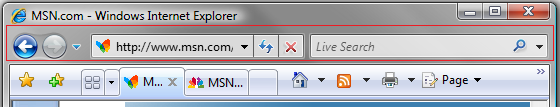
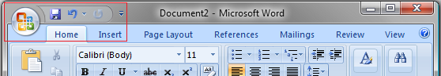
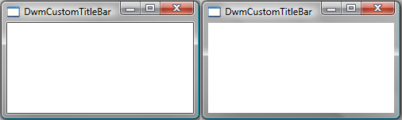
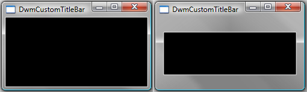
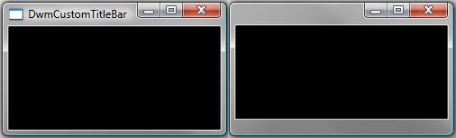
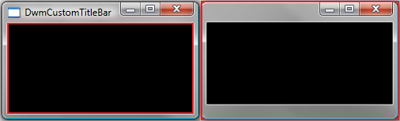
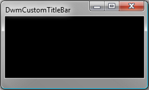

title: Custom Window Frame Using DWM description: This topic demonstrates how to use the Desktop Window Manager (DWM) APIs to create custom window frames for your application. ms.assetid: 7f7dc902-40d3-44e9-adc2-05a39c634eb3 keywords:
This topic demonstrates how to use the Desktop Window Manager (DWM) APIs to create custom window frames for your application.
In Windows Vista and later, the appearance of the non-client areas of application windows (the title bar, icon, window border, and caption buttons) is controlled by the DWM. Using the DWM APIs, you can change the way the DWM renders a window's frame.
One feature of the DWM APIs is the ability to extend the application frame into the client area. This enables you to integrate a client UI element—such as a toolbar—into the frame, giving the UI controls a more prominent place in the application UI. For example, Windows Internet Explorer 7 on Windows Vista integrates the navigation bar into the window frame by extending the top of the frame as shown in the following screen shot.

The ability to extend the window frame also enables you to create custom frames while maintaining the window's look and feel. For example, Microsoft Office Word 2007 draws the Office button and the Quick Access toolbar inside the custom frame while providing the standard Minimize, Maximize, and Close caption buttons, as shown in the following screen shot.

The functionality to extend the frame into the client area is exposed by the DwmExtendFrameIntoClientArea function. To extend the frame, pass the handle of the target window together with the margin inset values to DwmExtendFrameIntoClientArea. The margin inset values determine how far to extend the frame on the four sides of the window.
The following code demonstrates the use of DwmExtendFrameIntoClientArea to extend the frame.
// Handle the window activation.
if (message == WM_ACTIVATE)
{
// Extend the frame into the client area.
MARGINS margins;
margins.cxLeftWidth = LEFTEXTENDWIDTH; // 8
margins.cxRightWidth = RIGHTEXTENDWIDTH; // 8
margins.cyBottomHeight = BOTTOMEXTENDWIDTH; // 20
margins.cyTopHeight = TOPEXTENDWIDTH; // 27
hr = DwmExtendFrameIntoClientArea(hWnd, &margins);
if (!SUCCEEDED(hr))
{
// Handle the error.
}
fCallDWP = true;
lRet = 0;
}
Note that the frame extension is done within the WM_ACTIVATE message rather than the WM_CREATE message. This ensures that frame extension is handled properly when the window is at its default size and when it is maximized.
The following image shows a standard window frame (on the left) and the same window frame extended (on the right). The frame is extended using the previous code example and the default Microsoft Visual Studio WNDCLASS/WNDCLASSEX background (COLOR_WINDOW +1).

The visual difference between these two windows is very subtle. The only difference between the two is that the thin black line border of the client region in the window on the left is missing from the window on the right. The reason for this missing border is that it is incorporated into the extended frame, but the rest of the client area is not. For the extended frames to be visible, the regions underlying each of the extended frame's sides must have pixel data with an alpha value of 0. The black border around the client region has pixel data in which all color values (red, green, blue, and alpha) are set to 0. The rest of the background does not have the alpha value set to 0, so the rest of the extended frame is not visible.
The easiest way to ensure that the extended frames are visible is to paint the entire client region black. To accomplish this, initialize the hbrBackground member of your WNDCLASS or WNDCLASSEX structure to the handle of the stock BLACK_BRUSH. The following image shows the same standard frame (left) and extended frame (right) shown previously. This time, however, hbrBackground is set to the BLACK_BRUSH handle obtained from the GetStockObject function.

After you have extended the frame of your application and made it visible, you can remove the standard frame. Removing the standard frame enables you to control the width of each side of the frame rather than simply extending the standard frame.
To remove the standard window frame, you must handle the WM_NCCALCSIZE message, specifically when its wParam value is TRUE and the return value is 0. By doing so, your application uses the entire window region as the client area, removing the standard frame.
The results of handling the WM_NCCALCSIZE message are not visible until the client region needs to be resized. Until that time, the initial view of the window appears with the standard frame and extended borders. To overcome this, you must either resize your window or perform an action that initiates a WM_NCCALCSIZE message at the time of window creation. This can be accomplished by using the SetWindowPos function to move your window and resize it. The following code demonstrates a call to SetWindowPos that forces a WM_NCCALCSIZE message to be sent using the current window rectangle attributes and the SWP_FRAMECHANGED flag.
// Handle window creation.
if (message == WM_CREATE)
{
RECT rcClient;
GetWindowRect(hWnd, &rcClient);
// Inform the application of the frame change.
SetWindowPos(hWnd,
NULL,
rcClient.left, rcClient.top,
RECTWIDTH(rcClient), RECTHEIGHT(rcClient),
SWP_FRAMECHANGED);
fCallDWP = true;
lRet = 0;
}
The following image shows the standard frame (left) and the newly extended frame without the standard frame (right).

By removing the standard frame, you lose the automatic drawing of the application icon and title. To add these back to your application, you must draw them yourself. To do this, first look at the change that has occurred to your client area.
With the removal of the standard frame, your client area now consists of the entire window, including the extended frame. This includes the region where the caption buttons are drawn. In the following side-by-side comparison, the client area for both the standard frame and the custom extended frame is highlighted in red. The client area for the standard frame window (left) is the black region. On the extended frame window (right), the client area is the entire window.

Because the entire window is your client area, you can simply draw what you want in the extended frame. To add a title to your application, just draw text in the appropriate region. The following image shows themed text drawn on the custom caption frame. The title is drawn using the DrawThemeTextEx function. To view the code that paints the title, see Appendix B: Painting the Caption Title.

[!Note]
When drawing in your custom frame, be careful when placing UI controls. Because the entire window is your client region, you must adjust your UI control placement for each frame width if you do not want them to appear on or in the extended frame.
Â
A side effect of removing the standard frame is the loss of the default resizing and moving behavior. For your application to properly emulate standard window behavior, you will need to implement logic to handle caption button hit testing and frame resizing/moving.
For caption button hit testing, DWM provides the DwmDefWindowProc function. To properly hit test the caption buttons in custom frame scenarios, messages should first be passed to DwmDefWindowProc for handling. DwmDefWindowProc returns TRUE if a message is handled and FALSE if it is not. If the message is not handled by DwmDefWindowProc, your application should handle the message itself or pass the message onto DefWindowProc.
For frame resizing and moving, your application must provide the hit testing logic and handle frame hit test messages. Frame hit test messages are sent to you through the WM_NCHITTEST message, even if your application creates a custom frame without the standard frame. The following code demonstrates handling the WM_NCHITTEST message when DwmDefWindowProc does not handle it. To see the code of the called HitTestNCA function, see Appendix C: HitTestNCA Function.
// Handle hit testing in the NCA if not handled by DwmDefWindowProc.
if ((message == WM_NCHITTEST) && (lRet == 0))
{
lRet = HitTestNCA(hWnd, wParam, lParam);
if (lRet != HTNOWHERE)
{
fCallDWP = false;
}
}
The following code sample demonstrates a window procedure and its supporting worker functions used to create a custom frame application.
//
// Main WinProc.
//
LRESULT CALLBACK WndProc(HWND hWnd, UINT message, WPARAM wParam, LPARAM lParam)
{
bool fCallDWP = true;
BOOL fDwmEnabled = FALSE;
LRESULT lRet = 0;
HRESULT hr = S_OK;
// Winproc worker for custom frame issues.
hr = DwmIsCompositionEnabled(&fDwmEnabled);
if (SUCCEEDED(hr))
{
lRet = CustomCaptionProc(hWnd, message, wParam, lParam, &fCallDWP);
}
// Winproc worker for the rest of the application.
if (fCallDWP)
{
lRet = AppWinProc(hWnd, message, wParam, lParam);
}
return lRet;
}
//
// Message handler for handling the custom caption messages.
//
LRESULT CustomCaptionProc(HWND hWnd, UINT message, WPARAM wParam, LPARAM lParam, bool* pfCallDWP)
{
LRESULT lRet = 0;
HRESULT hr = S_OK;
bool fCallDWP = true; // Pass on to DefWindowProc?
fCallDWP = !DwmDefWindowProc(hWnd, message, wParam, lParam, &lRet);
// Handle window creation.
if (message == WM_CREATE)
{
RECT rcClient;
GetWindowRect(hWnd, &rcClient);
// Inform application of the frame change.
SetWindowPos(hWnd,
NULL,
rcClient.left, rcClient.top,
RECTWIDTH(rcClient), RECTHEIGHT(rcClient),
SWP_FRAMECHANGED);
fCallDWP = true;
lRet = 0;
}
// Handle window activation.
if (message == WM_ACTIVATE)
{
// Extend the frame into the client area.
MARGINS margins;
margins.cxLeftWidth = LEFTEXTENDWIDTH; // 8
margins.cxRightWidth = RIGHTEXTENDWIDTH; // 8
margins.cyBottomHeight = BOTTOMEXTENDWIDTH; // 20
margins.cyTopHeight = TOPEXTENDWIDTH; // 27
hr = DwmExtendFrameIntoClientArea(hWnd, &margins);
if (!SUCCEEDED(hr))
{
// Handle error.
}
fCallDWP = true;
lRet = 0;
}
if (message == WM_PAINT)
{
HDC hdc;
{
PAINTSTRUCT ps;
hdc = BeginPaint(hWnd, &ps);
PaintCustomCaption(hWnd, hdc);
EndPaint(hWnd, &ps);
}
fCallDWP = true;
lRet = 0;
}
// Handle the non-client size message.
if ((message == WM_NCCALCSIZE) && (wParam == TRUE))
{
// Calculate new NCCALCSIZE_PARAMS based on custom NCA inset.
NCCALCSIZE_PARAMS *pncsp = reinterpret_cast<NCCALCSIZE_PARAMS*>(lParam);
pncsp->rgrc[0].left = pncsp->rgrc[0].left + 0;
pncsp->rgrc[0].top = pncsp->rgrc[0].top + 0;
pncsp->rgrc[0].right = pncsp->rgrc[0].right - 0;
pncsp->rgrc[0].bottom = pncsp->rgrc[0].bottom - 0;
lRet = 0;
// No need to pass the message on to the DefWindowProc.
fCallDWP = false;
}
// Handle hit testing in the NCA if not handled by DwmDefWindowProc.
if ((message == WM_NCHITTEST) && (lRet == 0))
{
lRet = HitTestNCA(hWnd, wParam, lParam);
if (lRet != HTNOWHERE)
{
fCallDWP = false;
}
}
*pfCallDWP = fCallDWP;
return lRet;
}
//
// Message handler for the application.
//
LRESULT AppWinProc(HWND hWnd, UINT message, WPARAM wParam, LPARAM lParam)
{
int wmId, wmEvent;
PAINTSTRUCT ps;
HDC hdc;
HRESULT hr;
LRESULT result = 0;
switch (message)
{
case WM_CREATE:
{}
break;
case WM_COMMAND:
wmId = LOWORD(wParam);
wmEvent = HIWORD(wParam);
// Parse the menu selections:
switch (wmId)
{
default:
return DefWindowProc(hWnd, message, wParam, lParam);
}
break;
case WM_PAINT:
{
hdc = BeginPaint(hWnd, &ps);
PaintCustomCaption(hWnd, hdc);
// Add any drawing code here...
EndPaint(hWnd, &ps);
}
break;
case WM_DESTROY:
PostQuitMessage(0);
break;
default:
return DefWindowProc(hWnd, message, wParam, lParam);
}
return 0;
}
The following code demonstrates how to paint a caption title on the extended frame. This function must be called from within the BeginPaint and EndPaint calls.
// Paint the title on the custom frame.
void PaintCustomCaption(HWND hWnd, HDC hdc)
{
RECT rcClient;
GetClientRect(hWnd, &rcClient);
HTHEME hTheme = OpenThemeData(NULL, L"CompositedWindow::Window");
if (hTheme)
{
HDC hdcPaint = CreateCompatibleDC(hdc);
if (hdcPaint)
{
int cx = RECTWIDTH(rcClient);
int cy = RECTHEIGHT(rcClient);
// Define the BITMAPINFO structure used to draw text.
// Note that biHeight is negative. This is done because
// DrawThemeTextEx() needs the bitmap to be in top-to-bottom
// order.
BITMAPINFO dib = { 0 };
dib.bmiHeader.biSize = sizeof(BITMAPINFOHEADER);
dib.bmiHeader.biWidth = cx;
dib.bmiHeader.biHeight = -cy;
dib.bmiHeader.biPlanes = 1;
dib.bmiHeader.biBitCount = BIT_COUNT;
dib.bmiHeader.biCompression = BI_RGB;
HBITMAP hbm = CreateDIBSection(hdc, &dib, DIB_RGB_COLORS, NULL, NULL, 0);
if (hbm)
{
HBITMAP hbmOld = (HBITMAP)SelectObject(hdcPaint, hbm);
// Setup the theme drawing options.
DTTOPTS DttOpts = {sizeof(DTTOPTS)};
DttOpts.dwFlags = DTT_COMPOSITED | DTT_GLOWSIZE;
DttOpts.iGlowSize = 15;
// Select a font.
LOGFONT lgFont;
HFONT hFontOld = NULL;
if (SUCCEEDED(GetThemeSysFont(hTheme, TMT_CAPTIONFONT, &lgFont)))
{
HFONT hFont = CreateFontIndirect(&lgFont);
hFontOld = (HFONT) SelectObject(hdcPaint, hFont);
}
// Draw the title.
RECT rcPaint = rcClient;
rcPaint.top += 8;
rcPaint.right -= 125;
rcPaint.left += 8;
rcPaint.bottom = 50;
DrawThemeTextEx(hTheme,
hdcPaint,
0, 0,
szTitle,
-1,
DT_LEFT | DT_WORD_ELLIPSIS,
&rcPaint,
&DttOpts);
// Blit text to the frame.
BitBlt(hdc, 0, 0, cx, cy, hdcPaint, 0, 0, SRCCOPY);
SelectObject(hdcPaint, hbmOld);
if (hFontOld)
{
SelectObject(hdcPaint, hFontOld);
}
DeleteObject(hbm);
}
DeleteDC(hdcPaint);
}
CloseThemeData(hTheme);
}
}
The following code shows the HitTestNCA function used in Enabling Hit Testing for the Custom Frame. This function handles the hit testing logic for the WM_NCHITTEST when DwmDefWindowProc does not handle the message.
// Hit test the frame for resizing and moving.
LRESULT HitTestNCA(HWND hWnd, WPARAM wParam, LPARAM lParam)
{
// Get the point coordinates for the hit test.
POINT ptMouse = { GET_X_LPARAM(lParam), GET_Y_LPARAM(lParam)};
// Get the window rectangle.
RECT rcWindow;
GetWindowRect(hWnd, &rcWindow);
// Get the frame rectangle, adjusted for the style without a caption.
RECT rcFrame = { 0 };
AdjustWindowRectEx(&rcFrame, WS_OVERLAPPEDWINDOW & ~WS_CAPTION, FALSE, NULL);
// Determine if the hit test is for resizing. Default middle (1,1).
USHORT uRow = 1;
USHORT uCol = 1;
bool fOnResizeBorder = false;
// Determine if the point is at the top or bottom of the window.
if (ptMouse.y >= rcWindow.top && ptMouse.y < rcWindow.top + TOPEXTENDWIDTH)
{
fOnResizeBorder = (ptMouse.y < (rcWindow.top - rcFrame.top));
uRow = 0;
}
else if (ptMouse.y < rcWindow.bottom && ptMouse.y >= rcWindow.bottom - BOTTOMEXTENDWIDTH)
{
uRow = 2;
}
// Determine if the point is at the left or right of the window.
if (ptMouse.x >= rcWindow.left && ptMouse.x < rcWindow.left + LEFTEXTENDWIDTH)
{
uCol = 0; // left side
}
else if (ptMouse.x < rcWindow.right && ptMouse.x >= rcWindow.right - RIGHTEXTENDWIDTH)
{
uCol = 2; // right side
}
// Hit test (HTTOPLEFT, ... HTBOTTOMRIGHT)
LRESULT hitTests[3][3] =
{
{ HTTOPLEFT, fOnResizeBorder ? HTTOP : HTCAPTION, HTTOPRIGHT },
{ HTLEFT, HTNOWHERE, HTRIGHT },
{ HTBOTTOMLEFT, HTBOTTOM, HTBOTTOMRIGHT },
};
return hitTests[uRow][uCol];
}
Desktop Window Manager Overview
Â
Â